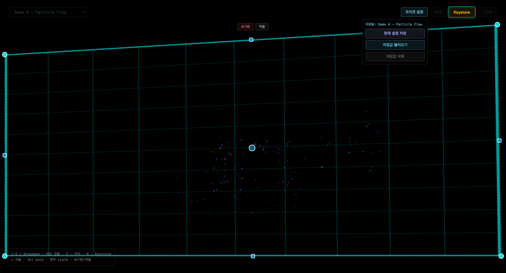
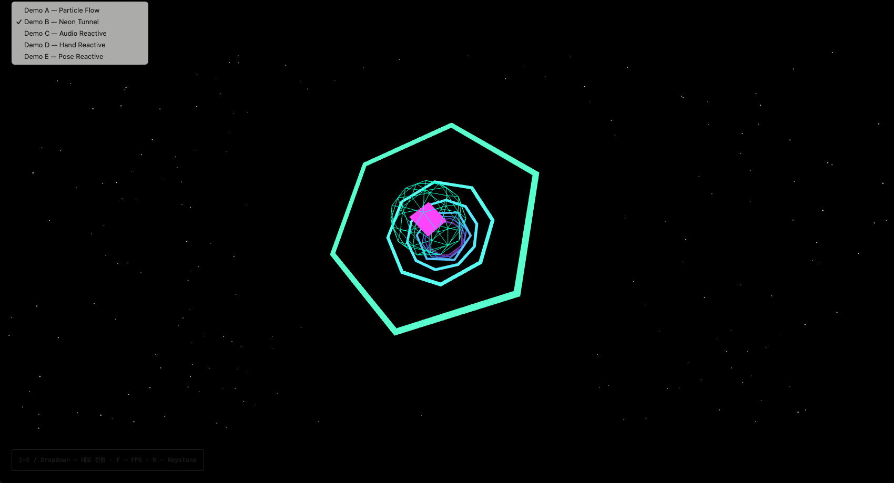
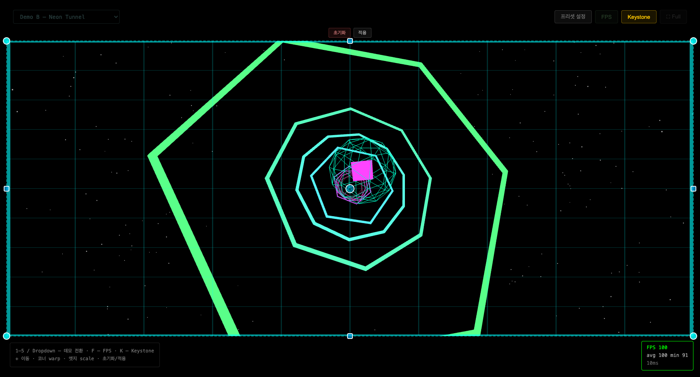
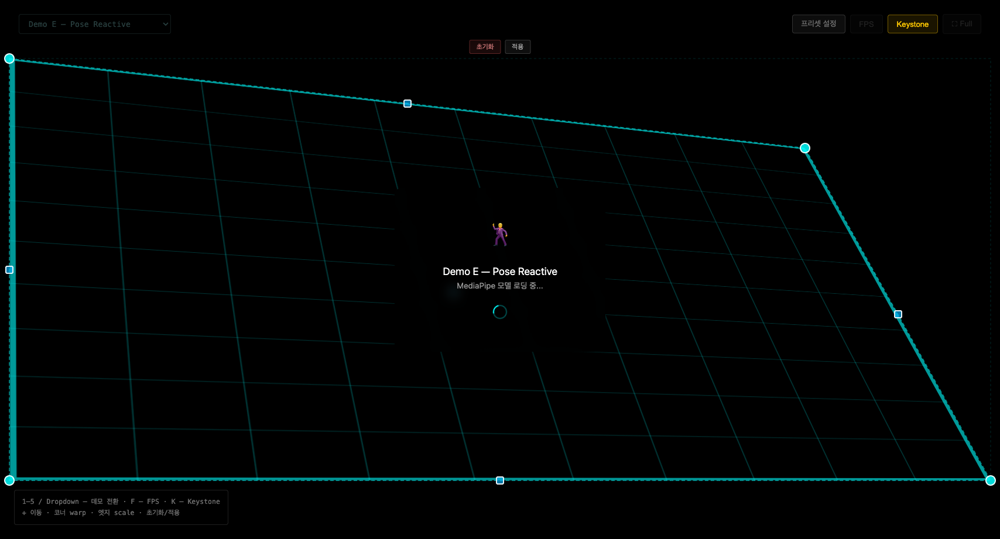
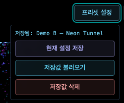

PoC 마무리 스프린트 — 키스톤 · Web Worker · 프리셋
2026-06-03
키스톤 보정 UX 완성 + Web Worker 오프로딩으로
프로젝터 시연 품질을 확보하고 PoC를 마무리한다.
스코프 (3개 영역)
| 영역 | 내용 |
|---|---|
| 키스톤 보정 | 이동/코너 warp/엣지 scale · 상하 100px/좌우 16px 기본 여백 · 캔버스/아웃라인 동일 좌표계 · localStorage 영속 |
| Web Worker | Pose 추론 Worker 분리 · Float32Array transferable (33×2 floats, zero-copy) · 메인스레드 폴백 |
| 시연 프리셋 | Demo + 키스톤 값 + FPS on/off localStorage 저장·복원 (usePreset 훅) |
| # | 결정 내용 | 선택 · 근거 |
|---|---|---|
| 1 | Web Worker 좌표 직렬화 방식 |
Float32Array transferable 채택 SharedArrayBuffer 헤더 설정 불필요 · PoC 수준에 충분 |
| 2 | 키스톤 드래그 핸들 좌표 방식 |
절대 픽셀 · 스냅 없음 드래그가 자연스럽고 구현 단순 — 정밀도 요구 없음 |
| 3 | 시연 프리셋 저장 방식 |
localStorage 단독 PoC 마무리 스프린트 — 구현 비용 최소화 |
아키텍처 흐름
새 컴포넌트 / 훅
| 이름 | 역할 |
|---|---|
KeystoneOverlay |
CSS matrix3d · 이동/코너 warp/엣지 scale 핸들 · 10×10 그리드 · localStorage |
workers/poseWorker.ts |
MediaPipe Pose Worker · GPU→CPU 폴백 |
usePreset |
시연 구성 (Demo + corners) 저장·복원 |
수용 기준 (9/9)
테스트 현황
| 구분 | count |
|---|---|
| Sprint/3 누계 | 116 tests |
| Sprint/4 신규 | +10 tests |
| 합계 | 126 tests |

Demo A + 키스톤 활성화 · 드롭다운 데모 선택 · 좌측 하단 조작 설명 박스

드롭다운 데모 전환 · Demo B 선택

Demo B + 키스톤 · FPS 100 avg 91 min

Demo E + 키스톤 warp 적용 — 코너 변형 / 그리드 시각화

프리셋 패널 · 현재 설정 저장/저장값 불러오기/저장값 삭제
이월 항목 (Sprint/3 → Sprint/4) · 전원 완료
리스크 → 해소 방식
Sprint/4 제외 범위 — 의도적 제외
PoC 이후 확장 가능성
감사합니다